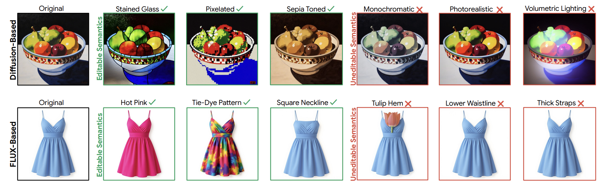
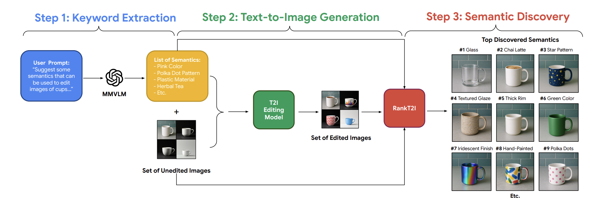
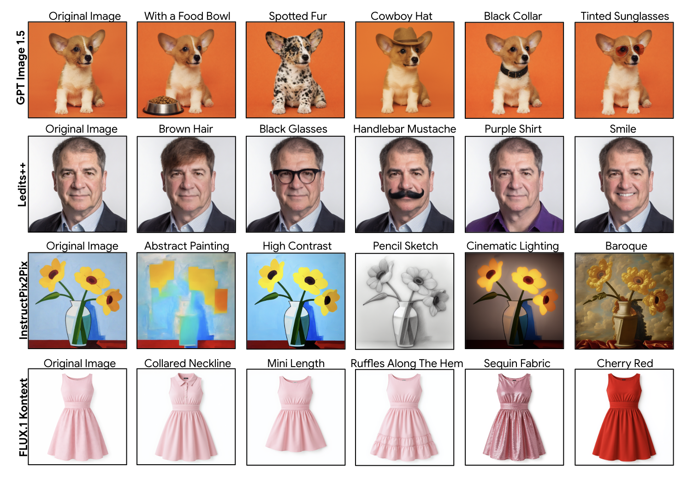

Recent advances in text-to-image (T2I) models have revolutionized the field of image generation and editing. However, identifying semantics that a T2I model can successfully edit in an image continues to be a challenging task. Most existing approaches require users to manually specify semantics to modify a particular image, a time-consuming process that often involves extensive trial and error. In this paper, we present RankT2I, a novel, training-free, and model-agnostic framework that automates the discovery of editable semantics in diffusion and FLUX-based models. Given a visual domain, we first utilize a multimodal vision-language model to gather a broad set of candidate semantics. We then frame semantic discovery as a set selection problem and use a submodular objective to identify semantics that are relevant, editable, and diverse. Our method helps users efficiently identify a wide range of semantics for text-to-image editing models across several domains while outperforming existing methods.

First, we prompt a multimodal vision-language model (MMVLM) to obtain a list of potentially editable semantics for a domain. Then, we feed these semantics and a set of unedited images into a T2I model, to get a set of edited images. Lastly, we input the attributes list, unedited images, and edited images into our submodular framework, “RankT2I,” which suggests relevant, editable, and diverse semantics.

Some of the top semantics discovered by RankT2I are in the figure above! Please check out our paper on arXiv for more results and experiments!
@inproceedings{allada2026rankt2i,
title={RankT2I: A Submodular Framework for Discovering Interpretable and Diverse Semantics in Text-to-Image Models},
author={Allada, Ritika and Yanardag, Pinar},
booktitle={European Conference on Computer Vision},
pages={268--287},
year={2026},
organization={Springer}
}